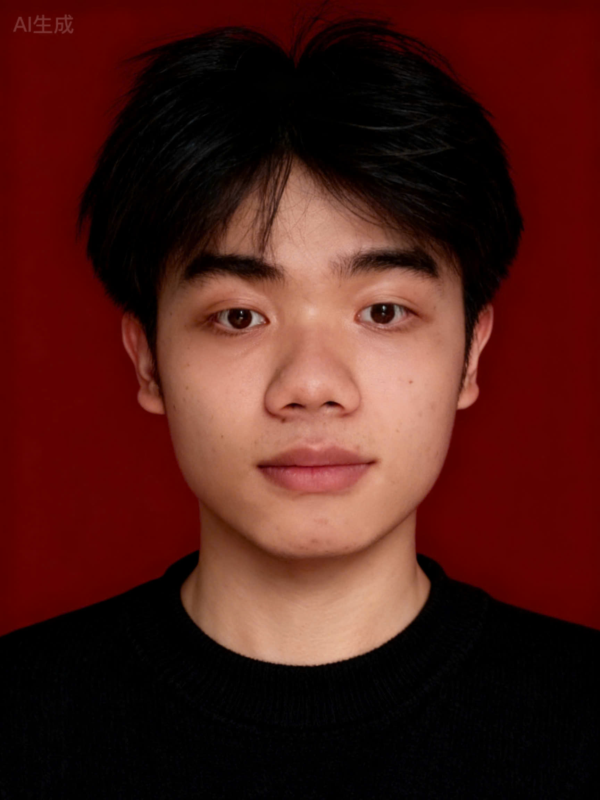

Đoàn Văn Tiến
Chào mọi người! Mình là Đoàn Văn Tiến, đến từ Trường Đại học Khoa học Tự nhiên – ngôi trường của những người yêu khoa học và khám phá!
Định Hướng Nghề Nghiệp
Tôi đang tập trung phát triển kỹ năng với mục tiêu trở thành **Data Engineer** hoặc **Web Designer** chuyên nghiệp. Hiện tại, tôi là sinh viên năm nhất trường Đại học Khoa học Tự nhiên, luôn chủ động tìm kiếm cơ hội học hỏi và thực hành để hiện thực hóa mục tiêu này.